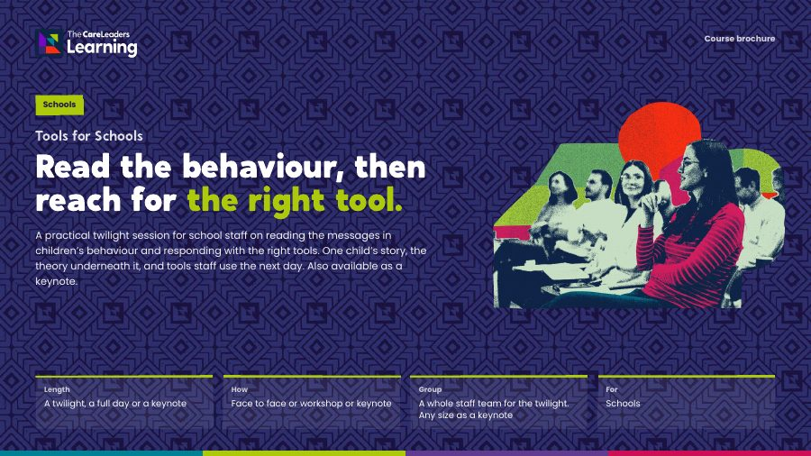

Tools for Schools: training on children in care for school staffRead the behaviour, then reach for the right tool.
For whole school staff teams, from teaching assistants to senior leaders, who teach children in care and children with a social worker. Your staff learn to read what sits behind a behaviour, change how they talk about these children and leave with three tools to try the next day. Children meet fewer escalations and more adults who understand why school can be hard.
- Length
- 6 hours face to face, usually 10am to 4pm. 2 hours live online
- How
- Face to face or live online
- Group
- Up to 60 people
- For
- Primary and secondary school staff

A child in care who walks out of a lesson, refuses to start work or swears at a teacher is often met with the same sanctions as everyone else, and the behaviour escalates. Staff can see that something else is going on but have nothing practical to do differently on Monday morning. Many are also unsure how social care works, what the designated teacher and the virtual school do, or who to call. This session gives them that. Every part opens with a school day seen from the child’s side, explains it with the research and ends with a tool staff practise before they go home.
What changes
- Read behaviour as communication and respond in the moment without escalating it.
- Try one of three tools in the week after the session: profile reframing, de-escalation phrases, or separating the reason from the behaviour.
- Talk about children in care differently in the staffroom, in meetings and in records.
- Know when to involve the designated teacher, the designated safeguarding lead, the social worker and the virtual school.
- Fewer escalations, removals and sanctions for behaviour linked to what has happened to them
- A key adult in school who understands why some days are harder
- Staff who talk about them without labels or low expectations
- School and social care working with each other, not against each other
Story
- Describe a school day from the side of a child in care, including what adults in school often miss.
- Recognise how attachment difficulties and trauma can show up in a classroom, a corridor and a detention.
Theory
- Explain behaviour as communication, using Dan Siegel’s window of tolerance (1999) to tell when a child can think and when they can’t.
- Explain how labels and low expectations shape how a child is treated, drawing on Erving Goffman’s work on stigma (1963) and Rosenthal and Jacobson’s research on teacher expectations (1968).
Action
- Use de-escalation phrases and Separating Reason from Behaviour to calm a tense moment and hold the boundary while showing the child you understand why it happened.
- Rewrite a pupil profile in language that is accurate and doesn’t label, and name when to contact the designated teacher, designated safeguarding lead, social worker and virtual school head.
- Teachers and teaching assistants in primary and secondary schools
- Pastoral, inclusion and safeguarding staff
- Designated teachers for children in care and previously in care
- Senior leaders who set and review the behaviour policy
- Ideally the whole staff team together. No prior knowledge of social care is needed.
Session by session
 Story
Story Theory
Theory Action
Action
Every part opens with a moment from one pupil’s school week, explains it with the research and ends with a tool staff practise in the room. The stories are composites. They draw on real experiences of care but are not one person. Open a part to see what happens.
1The messages in behaviour
Story. Tyler, 12, is in his second secondary school this year. In period 1 he is asked to read aloud, laughs, throws his book and walks out. By break he has a detention and nobody has asked him why.
Theory. Behaviour is communication. Dan Siegel’s window of tolerance (1999) gives staff a quick way to tell when a child is calm enough to think, and when they are too stressed to hear a reasonable instruction, however calmly it is given.
Action. Window of Tolerance. Staff place three moments from Tyler’s morning on the window, then do the same for a pupil they teach, anonymised, and agree what an adult could do differently at each point.
By the end of this part people can explain the window of tolerance to a colleague, and tell from a child’s behaviour whether they are in a state to think or not.
 You leave with The Window of Tolerance, as a way to read what sits behind a behaviour.
You leave with The Window of Tolerance, as a way to read what sits behind a behaviour.
2Attachment and trauma
Story. Amira, 8, comes back after half term and won’t go into class. She hides in the toilets and, when found, says she hates her teacher. Her teacher was off sick the last week before the holiday.
Theory. Bowlby’s attachment theory (1969) explains why a child who has lost adults before reacts so strongly to separations that look small. Louise Bombèr’s work on attachment in schools (Inside I’m Hurting, 2007) shows why a consistent key adult matters. The DfE’s Behaviour in Schools guidance (2024) expects staff to look at underlying factors and put support in place alongside sanctions.
Action. De-escalation phrases. In threes, staff rehearse what to say to Amira at the toilet door, and to a pupil of their own in a tense moment: fewer words, a calm voice, the boundary held. They swap roles so everyone practises as the adult.
By the end of this part people can use three or four de-escalation phrases in a tense moment, and describe what a key adult does for a child like Amira.
 You leave with De-escalation phrases for a tense moment, and a clearer picture of the key adult’s role.
You leave with De-escalation phrases for a tense moment, and a clearer picture of the key adult’s role.
3Language and stigma
Story. Before Tyler arrives, his pupil profile says “volatile, poor attendance, known to police”. By the end of his first week, three teachers have moved him to the back of the room.
Theory. Erving Goffman’s work on stigma (1963) explains how a label becomes the first thing people see. Rosenthal and Jacobson’s Pygmalion in the Classroom (1968) showed that teachers’ expectations can shape how pupils are taught and how they do. Words in staffrooms, meetings and profiles carry those expectations.
Action. Profile reframing. Staff rewrite Tyler’s profile, then a real anonymised pupil profile from their school, so it is accurate, includes what helps and what the child is good at, and doesn’t label. They also practise one line to change the conversation when a colleague labels a child in the staffroom.
By the end of this part people can rewrite a pupil profile without labels, and redirect a labelling conversation with a colleague.
 You leave with A reframed profile, and a line to change the conversation about a child in the staffroom.
You leave with A reframed profile, and a line to change the conversation about a child in the staffroom.
4Where school and social care clash
Story. Tyler’s social worker rings on a Thursday afternoon to say he is moving homes on Monday. School learns the rest from Tyler, who is excluded the following week.
Theory. School and social care work to different rules and timescales, and each often doesn’t know what the other is for. We set out the roles of the designated teacher, the designated safeguarding lead, the social worker and the virtual school head, and who should be told what and when.
Action. Separating Reason from Behaviour. Staff work through Tyler’s exclusion scenario, separating what he did from why, deciding which boundary holds and what support goes alongside it, and who in school and social care needs to know.
By the end of this part people can name who to contact for a child in care and when, and use Separating Reason from Behaviour to hold a boundary while responding to the reason.
 You leave with Three tools to take into school, with the handouts to keep.
You leave with Three tools to take into school, with the handouts to keep.
Choose how you run it
We come to your school for a development day, 10am to 4pm, with time to practise every tool.
- Length
- One day, 10am to 4pm
- Group
- Up to 60 people
- You provide
- A room set up for small-group work and a screen with HDMI
A 2-hour live session on Teams or Zoom, covering the core of the course: the key story, theory and tool from each part, with the workbook and on-demand course to go deeper. Breakout rooms are used for the practice, so staff across several schools can join without travelling.
- Length
- One 2-hour live session on Teams or Zoom
- Group
- Up to 60 people
- You provide
- Teams or Zoom with breakout rooms, and cameras on for the activities
Included for every delegate: a workbook to keep, the recording of the session for 12 months, an interactive on-demand course on The Care Leaders Online for 12 months, and a certificate of completion.
Over 60 people, we bring a second facilitator so everyone still gets the time the activities need.
Run as a workshop at Liverpool Virtual School’s Rising Futures conference in June 2025, for headteachers, designated teachers and social workers.
Read the case studyDownload the Tools for Schools brochure
The four parts of the session, what changes for staff and children, the formats and how to book, in one PDF to share with colleagues.
Thank you. Your brochure is downloading.
If it didn’t start, open the brochure here.

Questions commissioners ask
How is the session structured?
Four parts, each built the same way. Story: a moment from a pupil’s school week, such as Tyler walking out of period 1 or Amira hiding in the toilets. Theory: the research that explains it, from the window of tolerance and attachment to stigma and teacher expectations. Action: a tool staff practise in the room, such as de-escalation phrases or profile reframing. Face to face it runs as a 6-hour development day, usually 10am to 4pm, with breaks and time to practise every tool. Live online it is a 2-hour session covering the key story, theory and tool from each part.
What will staff actually take away?
Three tools to use the next day, with handouts: profile reframing, de-escalation phrases, and separating the reason from the behaviour. These are the tools we used at Liverpool Virtual School’s Rising Futures conference.
What do we need to do as a school?
Release the staff team for a development day, usually 10am to 4pm, or for a 2-hour live session online. Anonymised examples of behaviour your staff find hard make the practice more real, but are not essential. Afterwards, ask each member of staff to try one tool in the following week.
How does it fit with our behaviour policy?
It works alongside it. The DfE’s Behaviour in Schools guidance (2024) expects staff to consider underlying factors, to put support in place alongside sanctions, and to notify a pupil’s social worker if they are removed from class. The course shows staff how to do that in the moment.
Is it just for designated teachers?
No. It is for the whole staff team. Designated teachers who want a year-long programme should look at the Designated Leaders Programme. A trust or virtual school can book it for staff from several schools at once, up to 60 people, so staff in different schools share a language.
Who delivers it?
Trainers with lived experience of care and professional experience of children’s services. The course was designed by Luke Rodgers BEM, who grew up in care and has spent his career leading change in children’s services, and it follows our Story, Theory, Action approach.
Often booked with
 SchoolsThe Designated Leaders ProgrammeA year that turns designated teachers into leaders of trauma-informed practice in their school.A school year
SchoolsThe Designated Leaders ProgrammeA year that turns designated teachers into leaders of trauma-informed practice in their school.A school year Understanding careBehind the BehaviourReading behaviour as communication, and responding without losing the relationship.6 hours face to face, 2 hours online
Understanding careBehind the BehaviourReading behaviour as communication, and responding without losing the relationship.6 hours face to face, 2 hours online SchoolsTwo Timetables: When School Meets Social CareTeachers and social workers learning each other’s worlds, so children stop falling between them.6 hours face to face, 2 hours online
SchoolsTwo Timetables: When School Meets Social CareTeachers and social workers learning each other’s worlds, so children stop falling between them.6 hours face to face, 2 hours onlineTalk to us about Tools for Schools
Tell us who it is for and roughly how many people. We will shape it around your service and send you a quote.